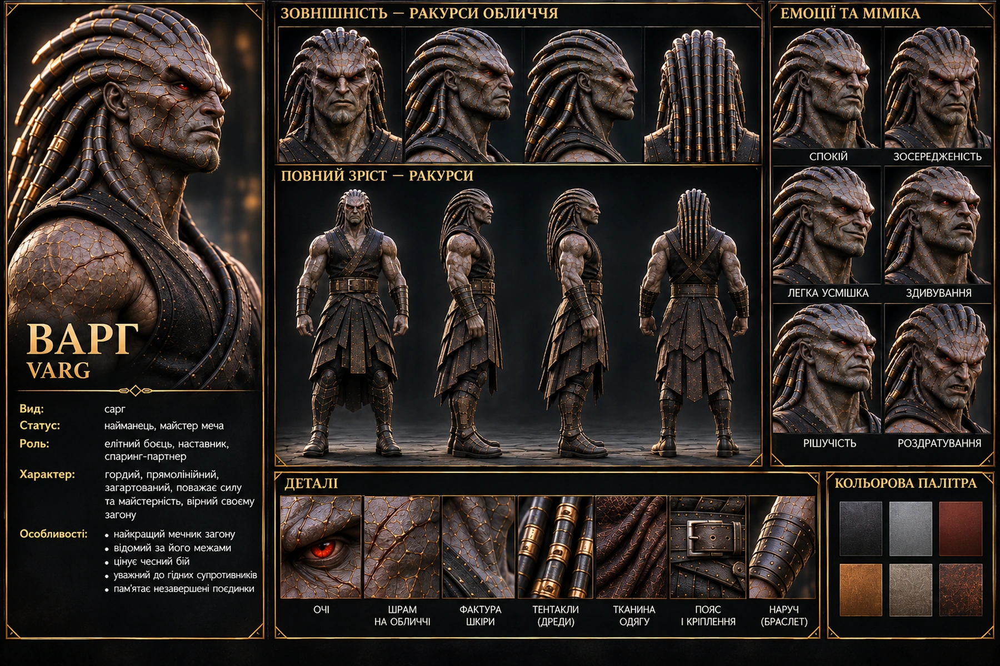

ОСНОВНА ІНФОРМАЦІЯ
Майстер меча серед саргів
Варг — сарг і найманець, відомий як найкращий мечник свого загону. Він виступає елітним бійцем, наставником і спаринг-партнером, передаючи бойовий досвід та перевіряючи майстерність інших у поєдинках.
Ім’я: Варг (Varg)
Вид: сарг
Статус: найманець
Спеціалізація: майстер меча
Роль: елітний боєць, наставник, спаринг-партнер
Зріст: приблизно у 1,3 раза вищий за людину
Вік: не зазначений у доступних матеріалах
ЗОВНІШНІСТЬ І СПОРЯДЖЕННЯ
Луската шкіра та броня
Варг має масивну статуру й темну лускату шкіру з виразною кам’янистою фактурою. Його обличчя вирізняється глибоко посадженими червоними очима, потужною щелепою та рядом довгих відростків, схожих на дреди. Він носить темне багатошарове спорядження з металевими деталями та захистом передпліч.
Зброя закріплена за плечима. У руках Варг її не тримає.
ХАРАКТЕР
Власний кодекс і повага до майстерності
Варг гордий, прямолінійний і запальний. Він поважає силу та майстерність, вірний власному кодексу й цінує чесний бій. До гідних супротивників ставиться з повагою та пам’ятає незавершені поєдинки.
БОЙОВА МАЙСТЕРНІСТЬ
Найкращий мечник загону
Його основна спеціалізація — володіння мечем. Як наставник і спаринг-партнер, Варг допомагає іншим бійцям відточувати навички та перевіряти себе в бою.
Вік, походження, родинні зв’язки та докладні сюжетні події поки не розкриті в доступних матеріалах і не доповнюються припущеннями.